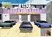
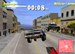
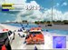

Commençons par parler de ces fameuses suspensions molles des années 70, premier effet: la voiture part dans tous les sens. Quand le conducteur novice la rattrape c’est de justesse et par chance. Et c’est cette impression de contrôle in extremis qui s’avère justement si fun, au début. Car ça marche, pour un temps.(cf: Overgames)
La voiture décolle dans les rues de San Francisco, atterrit sur deux roues (la jante s’échappe au milieu de la route, tant pis) déracine les malheureux poteaux indicateurs, laboure les gazons interdits, détruit les petits piquets blancs des propriétés privées, explose les barrières rayées des parkings, fait son chemin au forcing dans les carrefours, fait la nique aux barrages de police...
La voiture peut aller partout, quitte à y aller cul par-dessus tête. Il y a bien une jauge de "Dommage" qui limite les accidents ou une jauge "Infractions" qui finit par attirer les flics, rien n’oblige à une conduite serrée au début. C’est déjà assez amusant comme ça. Surtout qu’il y a plusieurs dizaines de kilomètres de rues à disposition dans les deux premières villes Miami et San Francisco (suivront New York et Los Angeles).
Oui sauf que après quelques tours en touriste, on commence à s’intéresser aux challenges qui attendent au tournant. Et alors là... Quand il s’agit de vouloir contrôler vraiment l’engin aux amortisseurs d’un autre âge la difficulté commence à se faire sentir. Un passage dans le Mode aventure "Un flic dans la Mafia" qui commence dans un parking situe vite fait le niveau de conduite. La première mission exige de réussir une série de manœuvres au sous-sol : accélération brutale, freinage in extremis au frein à main, 180°, puis 360°, slalom entre les piliers… Interdit de toucher trop souvent les voitures garées sous peine d’élimination, et il y a un chronomètre en plus pour mettre à l’aise ! On découvre alors que cette première Mission correspond exactement au Mode Entraînement, qui, lui, inclut une voiture qui fait la démonstration des manœuvres à accomplir. Ouf.
Le gameplay de Driver entraîne une dépendance rapide. (non couverte par la Sécu!).
Que cela soit dans ce mode Entraînement, dans la succession de missions scénarisées du Mode "Flic dans la Mafia", ou dans les modes : Faire un Tour et As du volant, il y un détail qui ne trompe pas l’observateur : le jeu est totalement addictif. Le rythme bref des missions incite à recommencer indéfiniment. A chaque échec ou meilleur score enregistré, une petite voix impérative répète inlassablement dans le crâne : "Allez, encore une fois !". Les secondes qui manquent, l’arbre que l’on aurait pu éviter, les flics que l’on aurait dû semer, le rendez-vous que l’on aurait dû honorer à l’autre bout de la ville, autant d’objectifs dont on frôle la réussite autant de fois que nécessaire sans souffrir de frustration.


Un scénario et une ambiance best of du ciné des années 70 et, pour une fois, vous en êtes le héros désabusé.
La cinématique sobre d’introduction au soft, est tout à fait représentative du mode scénario. D’abord film noir puis burlesque à l’extrême. Le flic, héros incarné qui doit infiltrer la Mafia incognito, devra accomplir comme un vrai malfrat toutes les exactions que son statut de chauffeur habile requiert. La nuit, le jour, il faut aller chercher des complices à la sortie de la banque qu’ils ont braquée, ramener une voiture volée au garage, "promener" quelqu’un du "milieu" au risque de se retrouver complice de meurtre, autant de séquences qui forment un tout cohérent. Une ambition cinématographique qui fait référence avec une compétence affolante aux films de blaxploitation des années 70 (Shaft en 1971, et autres…, dont Tarantino s’est refait l’écho dans Jackie Brown en 1997), comme à ceux du détective Steve McQueen dans Bullit (Peter Yates, 1968), des road movies comme Sugarland Express (Spielberg,1974), ou des célèbres casses de voitures des Blues Brothers (John Landis, 1980). Et la télévision n’est pas en reste avec des séries comme celle des inspecteurs Starsky et Hutch, ou des Rues de San Francisco…
Driver donne les moyens de vous faire votre cinéma, VOTRE film. Il alors devient nécessaire de voir et revoir le montage de Duel de Steven Spielberg…
Les gars de Reflections, responsables de ce bijou de programmation, ont été au bout de leur envie. Ils avaient déjà inventé dans Destruction Derby la possibilité de faire son play-back d’une course en choisissant des positions de caméras et en mémorisant son montage. Alors que, curieusement, personne n’a repris l’idée depuis, Driver devient l’aboutissement de cette idée géniale. Vous allez vous faire votre film ! N’importe quelle section du jeu, aventure, ou challenge bref, est re-filmable par vos soins. Placer une caméra au ras du sol alors que votre voiture s’engouffre dans une ruelle, insérer des gros plans des cartons et poubelles qui giclent sur votre passage, remettre la caméra à bord le temps de filmer le virage sur les chapeaux de roues, autant d’idées de réalisation à votre disposition grâce à une interface moins complexe qu’elle n’en a l’air au début. Imaginez la tête de votre copain quand vous lui montrerez VOTRE réalisation de VOTRE course-poursuite avec les flics de Miami ! !
Un univers visuel qui s’agrandit au fur et à mesure que les villes se déploient devant les pare-chocs. Au bout de la rue le tout est devenu énorme, et bourré de détails.


Visuellement les premières minutes laissent dubitatif. Difficile d’oublier les belles voitures de Gran Turismo et les circuits léchés de Ridge Racer 4. Et puis, routes après routes, virages après virages, nuits après jours, l’énormité de la réalisation du soft se fait sentir. Pas de circuits imposés dans Driver, ce sont pas moins de 4 centres villes américains qui ont été reproduits ! Façades variées, buildings connus, carrefours et routes célèbres, la Playstation a été poussée dans ses retranchements pour afficher tous ces environnements. Et il y a de la circulation sur les routes ! Le comportement des véhicules lambdas est si crédible que l’on finit par imaginer de vrais chauffeurs imbéciles à l’intérieur. Impossible de se retenir de les klaxonner, quand ce ne sont pas eux qui vous tancent d’abord ! Un klaxon qui a aussi son utilité pour chasser les piétons et faire son chemin dans les carrefours encombrés.
Certes il n’y a qu’une voiture réellement disponible qui sera déclinée en 14 modèles de poids variables, mais sa conduite a été peaufinée comme jamais ailleurs. Plus elle se conduit plus elle devient tangible. Incroyable. Et les impacts entre les voitures sont parfaits, carrosseries concassées comprises. Très vite le chauffeur de plus en plus confiant en lui-même et en son engin se permet toutes les audaces, coupe les virages, profite d’une rue inclinée pour volée par-dessus une circulation paresseuse, pile net pour le plaisir de brûler de la gomme, redémarre après un 360° juste concédé à la frime. Le Driver c’est vous.
Avec un gameplay pareil qu’est-ce qui peut gêner dans un soft aussi fignolé ? Les loading time de plus en plus pénibles de la Playstation par exemple ? Ou le système multi sauvegardes bien trop laborieux (une par catégorie de compétitions quasiment !) qui, vu les temps d’accès, est un peu lourd…Et puis forcément du pop-up (clipping du décor), mais qui se justifie sans mauvaise pensée tellement la liberté de pouvoir se diriger partout est satisfaisante.
Rechignons aussi sur le plan de la ville minimaliste, indispensable pour connaître son chemin mais un peu confus. Mais c’est tellement jouissif de pouvoir aller d’un point A (la planque) à un point B (la Banque) en choisissant son chemin que franchement la carte quadrillée trop petite, cela s’oublie vite.
Un jeu de voiture qui cumule tant d’idées et de réussites techniques qu’il influencera les autres.
Driver n’est pas un jeu de course avec un principe de fonctionnement qui repose sur la compétition. Oubliez les circuits, les lignes de départ et d'arrivée, les voitures numérotées. Oh il ne faut pas se leurrer, dépassement de soi et véritables exploits seront indispensables. Mais le contexte années 70, le choix de ces longues voitures improbables, le scénario magnifiquement séquencé, les voix françaises connues de tous, sont autant d’accomplissements d’idées que de production. Et, insistons, la tenue de route de la voiture est le cœur d’une programmation informatique exemplaire. L’I.A. des voitures adverses ou de plaisance, les envolées de caméra en introduction des chapitres de l’aventure, la résistance des textures aux pixels, les surfaces au sol, les floutés des phares nocturnes, les effets de lumière subtile même sur les carrosseries, sont des prouesses d’autant plus remarquables sur une Playstation au bord de l’apoplexie (la même chose dans deux ans sur Playstation 2 et c’est moi qui tombe dans les pommes ! !).
Ce qui place Driver au côté de Gran Turismo dans la cour des très grands est cette faculté, si rare dans un jeu, d’être accessible de multiples manières. Il est possible de s’amuser avec le programme pendant des heures avant de rentrer dans le jeu proprement dit. Gt Interactive a été bien inspiré d’acheter Reflections, même si les coups de productions de Driver ont étés lourds. Le malheureux Psygnosis, qui avait la main sur le studio à l’époque de Destruction Derby, doit se mordre les doigts. Driver est un chef d’œuvre modeste, un travail d’artisan remarquable qui a accouché d’une source inépuisable d’amusement pour le joueur.
|
GAMEPLAY
95/100
Exellent, on sent vraiment qu'on a le contrôle de la voiture, un modèle du genre, aux côtés de Gran Turismo!
GRAPHISMES
90/100
A part des cinématiques de qualités assez moyenne, Driver régale par la qualités de ses graphismes, encore plus en connaissant la taille des lieux animés en temps réel. La voiture a été modélisée avec exactitude à partir d'anciens modèles des années 70. Il s'agit ni plus ni moins du meilleur jeu de voiture sur playstation.
ANIMATION
88/100
L'animation est excellente. Rapidité et fuildité sont au rendez-vous. Rien à redire. On notera seulement quelques ralentissements lors des affrontements avec la polices, par exemple à certains carrefours, ou en passant les barrages(dur dur pour la play).
BANDE-SON
85/100
Bande sonore parfaite! L'ambiance est parfaitement retranscrite.
INTERET
92/100
Illimité, perdant ou gagnant, vous aurez toujours autant deplaisir à refaire telle ou telle mission, que ce soit dans le mode aventure "un flic dans la mafia" ou dans un des nombreux modes de jeux disponibles. Ce sont tout autant de challenges qu'il vous faudra relever avant de pouvoir annoncer fièrement que vous êtes le maître de la route!
TOTAL
85/100
Pas grand chose de plus à dire, je résumerai comme ceci: Drvier est tout simplement le meilleur jeu de caisses pour votre playstation, un jeu à ne manquer sous aucun prétexte!
|
|
|